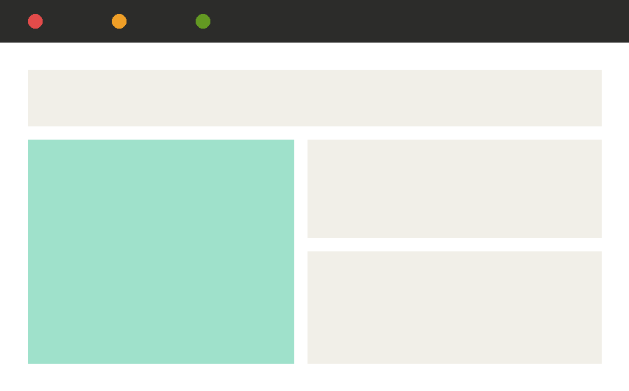

RootOS

RootOS is a distribution runtime for stateful services, built to survive node failure without manual failover. It's been in production since 2003 and now backs deployments across logistics and healthcare clients.
Distributed systemsSince 2003